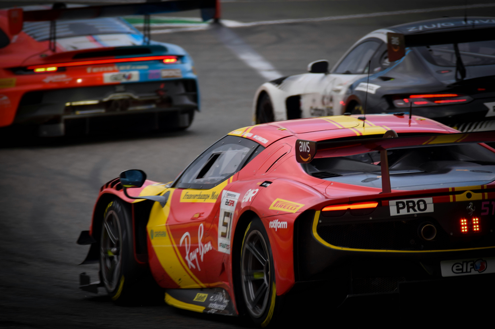

Де вирішується доля титулу
Ключові траси


Найпрестижніша GT-серія світу. Заводські команди та приватні екіпажі змагаються на легендарних трасах на серійних суперкарах.
GT World Challenge об'єднує найпрестижніші GT-перегони світу під одним брендом — від коротких спринтів до легендарних «24 годин Спа», де змагаються десятки заводських і приватних екіпажів.
Автомобілі класу GT3 балансують доступність для приватних команд із видовищністю заводських прототипів, роблячи серію однією з найщільніших за конкуренцією в автоспорті.
Серія веде історію від Blancpain GT Series, заснованої у 2011 році організацією SRO Motorsports Group, і була перейменована на GT World Challenge у 2018–2019 роках, об'єднавши європейські, американські та азійські змагання під одним брендом.
«24 години Спа» — головна подія календаря — проводиться з 1924 року, що робить її однією з найстаріших витривалісних гонок Європи, старшою навіть за «24 години Ле-Мана».
Формат Pro/Silver/Bronze/Am дозволяє в одному заїзді змагатися заводським пілотам поруч із досвідченими аматорами, що робить серію унікальною за глибиною складу учасників серед усіх дисциплін автоспорту.
Календар складається зі спринтерських вікендів (дві короткі гонки) та витривалісних етапів («24 години Спа», «Sepang 12 Hours» у межах Intercontinental GT Challenge), де екіпажі з 3–4 пілотів по черзі керують автомобілем.
Кожен екіпаж класифікується одразу у кількох заліках — абсолютному та за категорією досвіду пілотів (Pro, Silver, Am), що дає змогу командам різного рівня боротися за власні подіуми в межах однієї гонки.
Усі автомобілі побудовані за міжнародним регламентом GT3 — модифіковані серійні суперкари від Ferrari, Lamborghini, Porsche, McLaren, Mercedes-AMG, Audi, BMW та інших виробників, з потужністю близько 500–550 к.с.
Система Balance of Performance активно коригує вагу, потужність двигуна та об'єм паливного бака кожної моделі перед кожним етапом, щоб зберегти щільну конкуренцію між принципово різними конструкціями автомобілів.
«24 години Спа» 2025 виграв екіпаж команди Grasser Racing Team на Lamborghini Huracán GT3 EVO2 у складі Мірко Бортолотті, Люки Енгстлера та Джордана Пеппера — перша перемога Lamborghini в історії цієї гонки, здобута менш ніж за дві години до фінішу після боротьби з Porsche команди Rutronik Racing.
Серед пілотів на трасі того вікенду був і легенда MotoGP Валентино Россі, що виступав за команду WRT на BMW M4 GT3 — ще одне підтвердження статусу GT World Challenge як майданчика, де перетинаються зірки різних дисциплін автоспорту.
Одна з найстаріших витривалісних гонок Європи проводиться вперше.
SRO Motorsports Group створює попередницю сучасної серії.
Серія отримує сучасну назву й глобальну структуру календаря.
Команда Grasser Racing здобула дебютну перемогу Lamborghini на «24 годинах Спа».
Натисніть «Детальніше», щоб прочитати повну біографію, статистику та кар'єрні досягнення.
Найуспішніший виробник в історії «24 годин Ле-Мана» та символ інженерної досконалості.
Австрійська команда, що здобула першу в історії перемогу Lamborghini на «24 годинах Спа».
Бельгійська команда, одна з найуспішніших у сучасному GT3-автоспорті.
Італійська команда, офіційний партнер Ferrari у перегонах на витривалість та GT3.

Вершина автоспорту. Найшвидші боліди планети та найкращі пілоти світу борються за титул чемпіона світу.
Перейти на сторінку →
Перегони майбутнього. Повністю електричні боліди змагаються на вулицях найбільших міст світу.
Перейти на сторінку →
Чемпіонат світу з перегонів на витривалість. Головна подія — легендарні «24 години Ле-Мана».
Перейти на сторінку →Перегляньте повну галерею, історію автоспорту та профілі легендарних команд і пілотів.
Під час підготовки цієї сторінки використано перевірені офіційні та довідкові джерела.